2021.11.17 创建了第一个html文件，写了一个word（
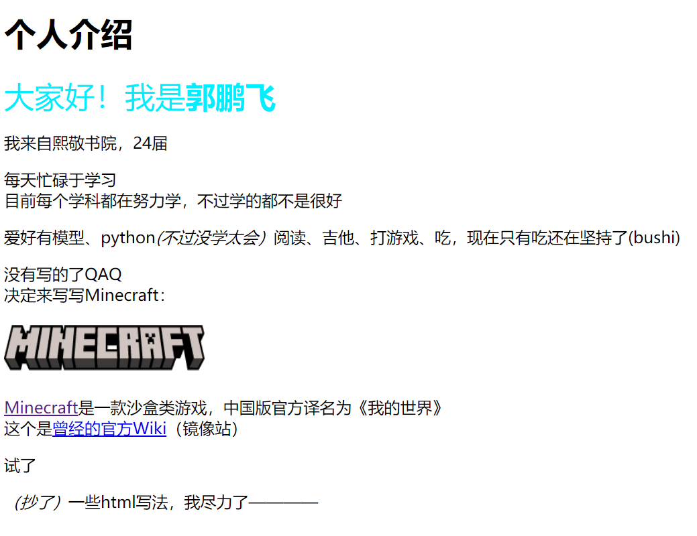
2021.11.26 加上了边框，有了第二个页面，花1个小时做出来了个表格(右图)
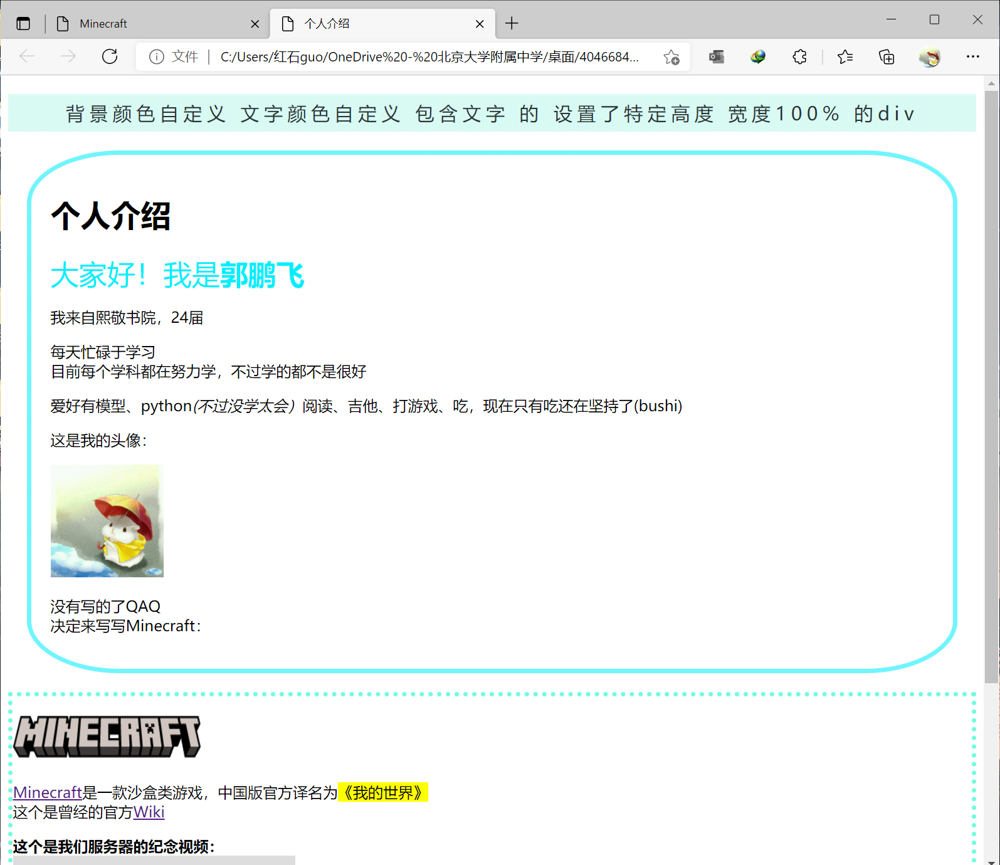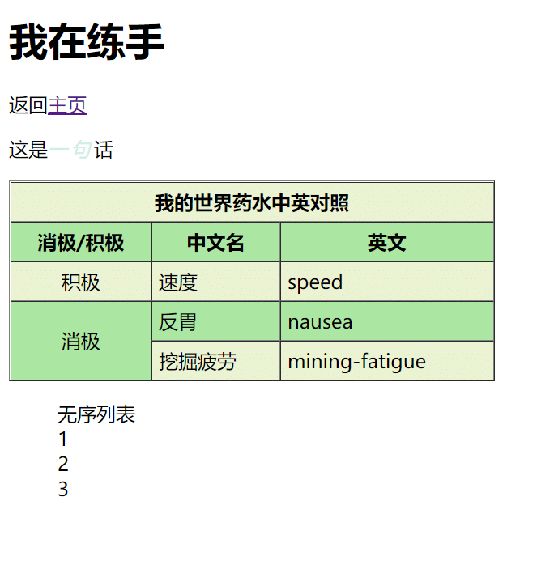
2021.12.5 照着B站教程写了个导航条，耗时1.5小时。因为不会把它置顶，请教了魏子峰，最终发现是一个“top:350px”害的
当时只有2个页面，教程里有4个，索性加了“关于”和“作者”页面
其实这个网页的一些思路就是向魏子峰大佬学习的，只是他不知道罢了
2021.12.9 周四晚自习连肝2小时，加上了这张高级的背景图片。
但因原图过亮使文字无法显示清晰，请沈义宣帮忙改了一下，有了这张背景
臧梓铭提供了文字颜色和背景建议(第一版交上去是黑字
帮忙对本作业提出建议的人很多，于是顺手增加了特别鸣谢部分
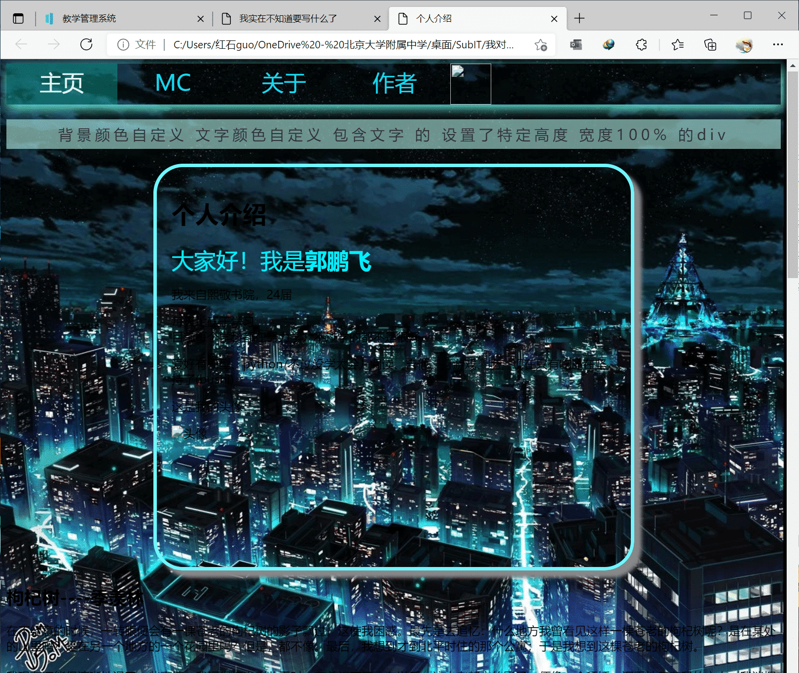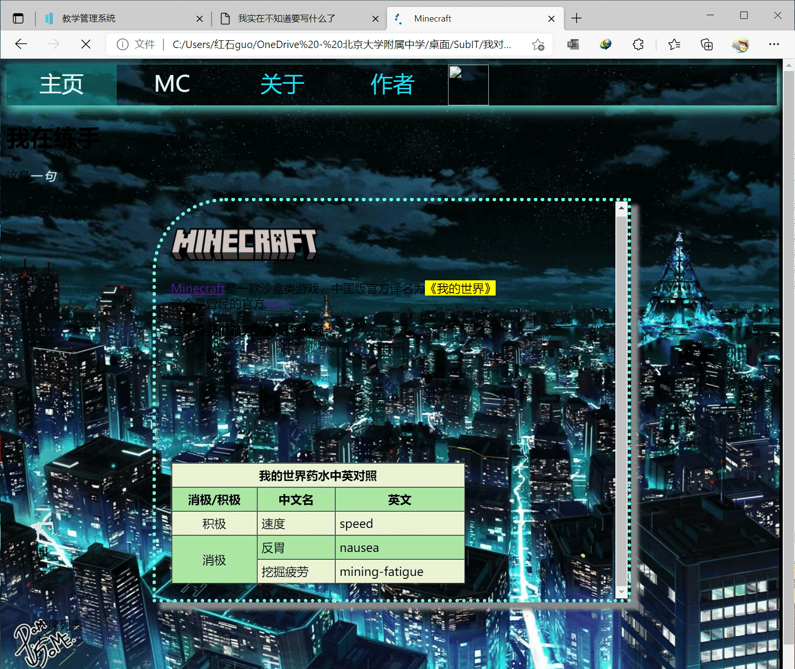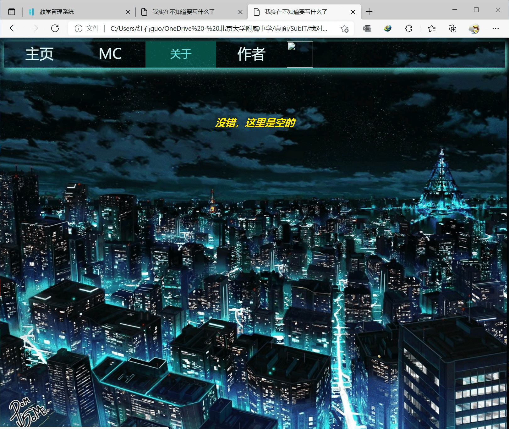
2021.12.10 周五课上学到了更多布局、设计知识，暂时还没用上
导航栏透明bug被刘语辰学长的模糊效果解决
开始写(补)了本更新日志
2021.12.11 根据教程加入了一个闪闪发光的按钮
进一步完善了关于mc的介绍(此时我还没写完作业)
2021.12.12 根据教程加入了一个感觉很好看的搜索按钮，但现在还不会用
同样根据上面的up主加入了神奇的???字体显示效果，具体见mc页面的服务器简史部分
根据学长建议进一步优化了导航栏效果和图片内存
附：经过上述亿些更新后的网页截图：为什么没有“关于”页面？因为它一直是现在这样
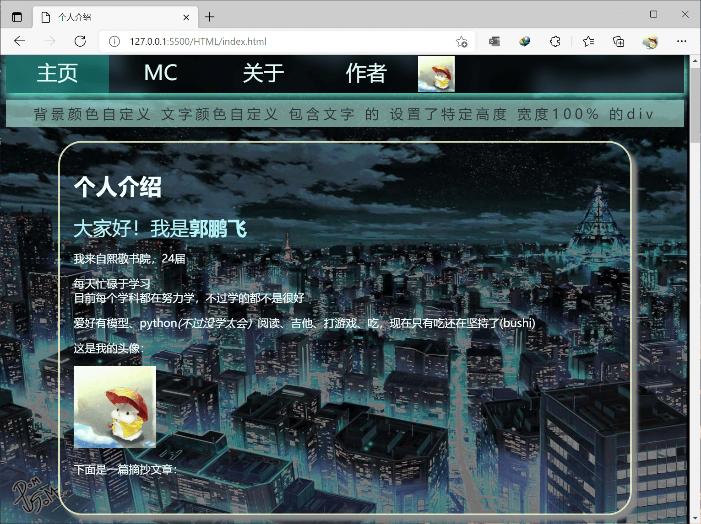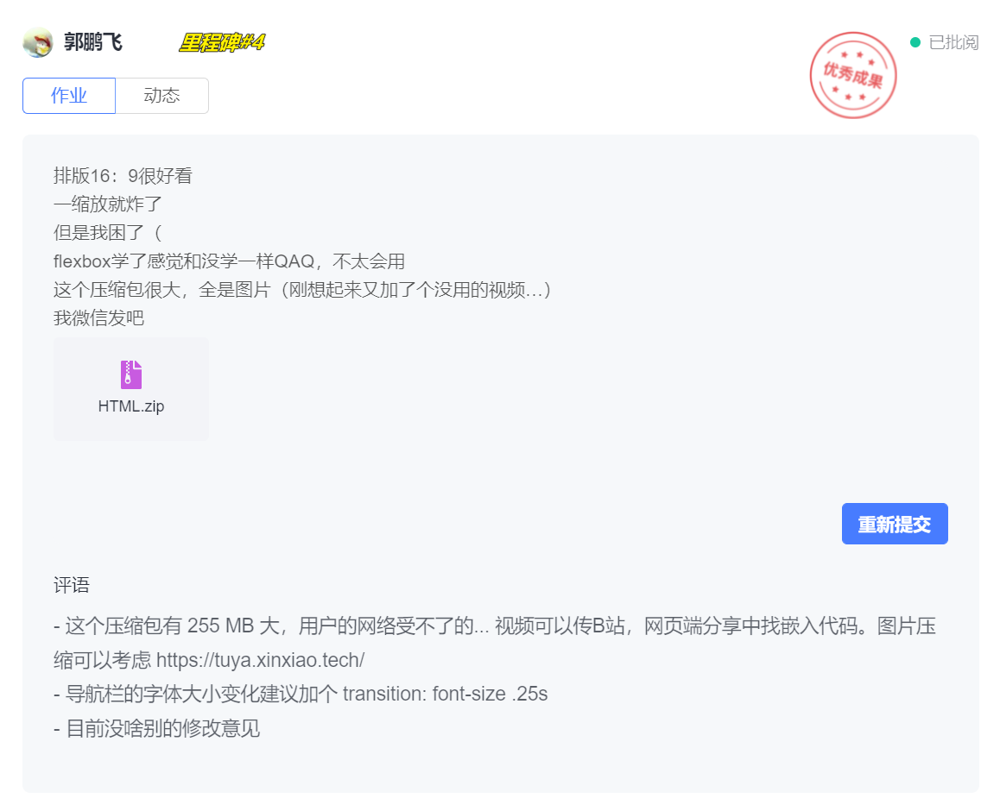
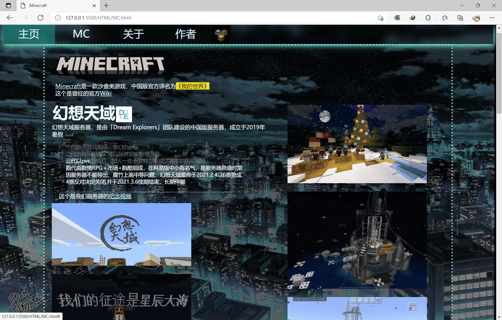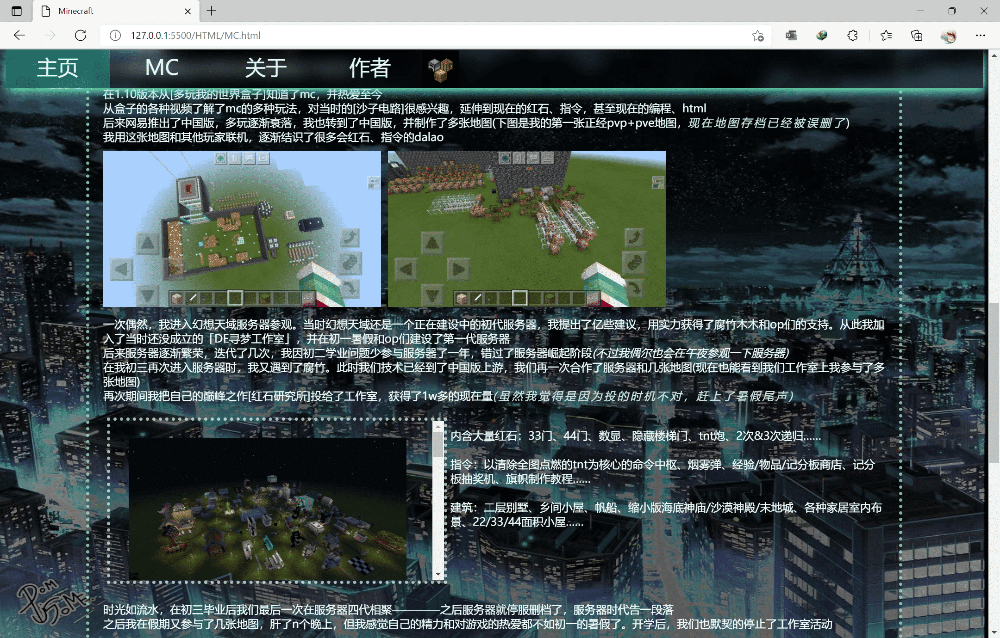
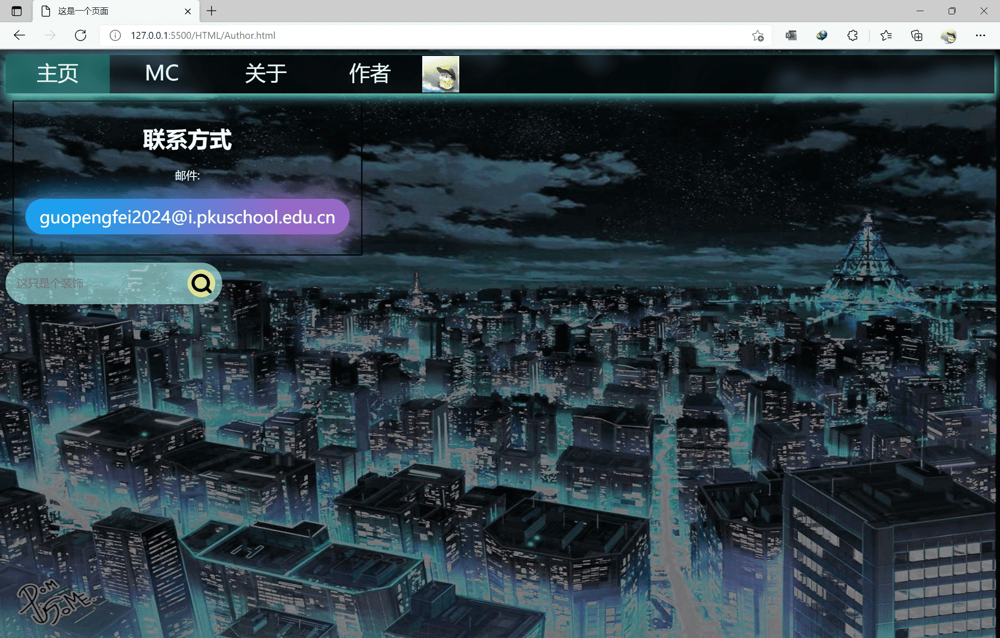
2021.12.26 根据教程加入了图片轮播！！
增加了联系方式
根据Windows弹窗教程和模态框教程增加了一个模态框，发现自己做不来
其实现在还有些bug，不会修了QAQ
2021.12.26 感谢刘语辰学长连夜改了这个作业，还有亿些问题没改进，我尽力交终稿作业前改完（改不完就算了——
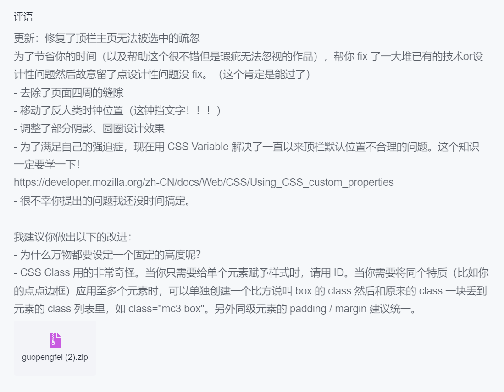
2022.1.1 终于完成了主页的一个小彩蛋，不过还是不太会JS，不过这个作为作业已经合格了(哈哈哈哈哈)
调整了部分排版
根据教程和之前的装饰真正做出来了好看的搜索框（必应搜索）！！！！！
只要多搜索，一定能成功！！
一不小心写到了2号，这个基本是最终版了……
2022.1.2 又把字体改成了思源宋体，好看了很多
2021.1.7 经历了叕一次大改，增加了万众瞩目的响应式布局(其实是我看到缩放后的页面崩溃了)
用了高达100+行代码实现，友好适配各种屏幕比例人士
更改了主页文章布局，变为预览+新页面打开，更充分利用空间